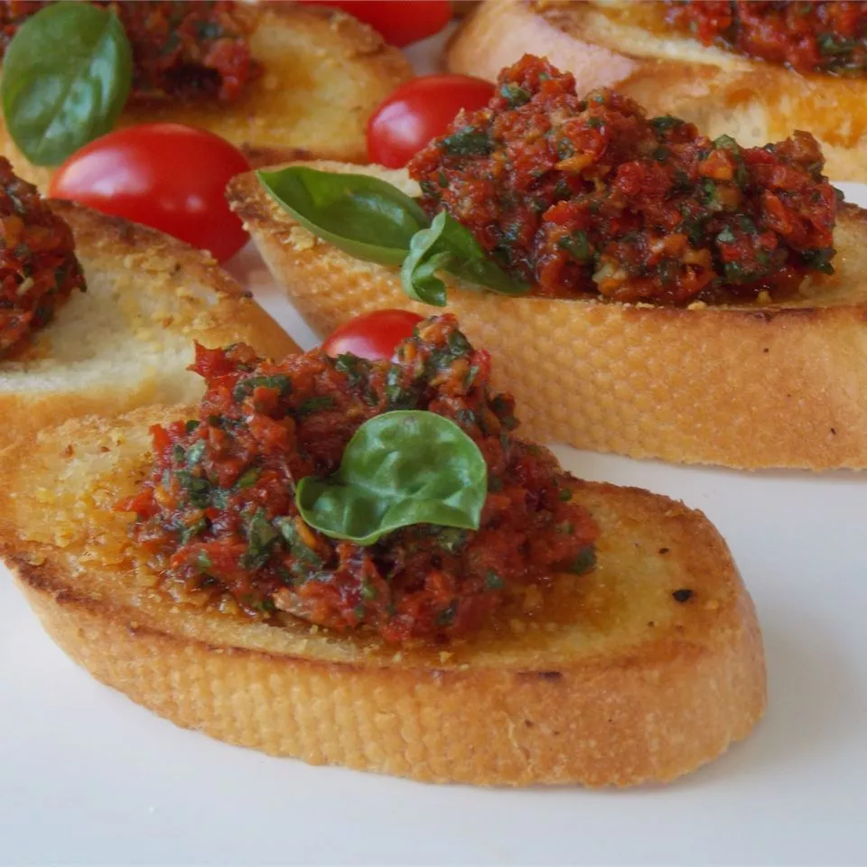

Sun Dried Tomato Pesto Recipe
Source: Jenny Crocker, Allrecipes.com

Ingredients
- 1 cup sun-dried tomatoes
- ½ cup fresh basil
- 2 tablespoons shredded Parmesan cheese
- 1 tablespoon minced garlic
- 1 teaspoon salt
- ¾ cup olive oil
Steps
-
Place sun-dried tomatoes in a small pot and cover with water;
bring to a boil.
-
Remove from heat and let tomatoes soften, about 10 minutes. Drain.
-
Blend tomatoes, basil, Parmesan cheese, garlic, and salt in a blender until mixed.
Slowly add olive oil, about 1/4 cup at a time; blend until smooth.
Back